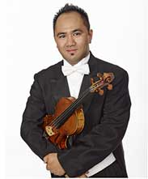
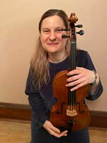

About Buffalo Strings Musicians

Robbie, cellist, a native Western New Yorker, has performed as soloist with the Amherst and Cheektowaga Symphonies, as well as the Ars Nova Musicians Chamber Orchestra. He studied at the Juilliard School with Harvey Shapiro and the Eastman School of Music with Paul Katz of the Cleveland Quartet. Robbie is a member of the Buffalo Philharmonic Orchestra

Donna, viola and violin is a well-known soloist, chamber and orchestral musician and has performed concerts internationally on five continents as well as in the Western New York area. She is a graduate of the Juilliard School of Music with a Masters of Music and the Eastman School of Music with a Doctoral degree in music. She also has a Bachelor of Music Education. Donna is a versatile musician and enjoys performing and teaching a variety of styles and genres of music for many different audiences.

Nadia, violin, received her Master's Degree in Violin Performance in Europe. She was a top prize winner for the "Nedyalka Simeonova" Violin competition, and the "Golden Diana" Chamber Music competition. She has appeared as soloist with the State Philharmonic Orchestra of Plovdiv, and Erie Philharmonic. Nadia held positions with the Orquestra Sinfonica do Estado de Sao Paulo, Brazil and the State Philharmonic Orchestra of Plovdiv. She has served as assistant principal for the Philharmonic of the Nations, Germany (tour of Europe). Nadia currently resides in Buffaclo, NY, performs with the Buffalo Philharmonic Orchestra and is an Artist in Residence at the St. Joseph's Collegiate Institute.

Antoine, violin, is a Principal Second Violinist of the Buffalo Philharmonic Orchestra. He received Bachelor of Music at the University of Montreal and a Master's Degree in Violin Performance at McGill University. Subsequently completed a music fellowship program sponsored by the Quebec Government. He worked at the Kent Blossom Chamber Music Festival in Ohio where he received the Joseph Gingold Award. Antoine performed in Breckenridge Colorado as the Principal Second Violin with the National Repertory Orchestra. He has won several competitions including those held at the National Music Festival, Czech and Slovak Music Festival, and is a second place winner for all categories in the International Stepping Stone of Canadian Music Competition. Antoine has appeared as soloist with orchestras, such as the Montreal Contemporary Orchestra, Orchestre Metropolitan of Montreal, Mount Royal Symphony and Laval Symphony.
 Anya, viola and violin, received her training at the Moscow Conservatory, after which she came to the United States and received both a Masters Degree and Artist Diploma from the Longy School of Music of Bard College. She has performed as a soloist and chamber musician throughout Russia, Europe and United States. She has performed in chamber concerts at Tanglewood with members of the Boston Symphony Orchestra. She has appeared at festivals such as the Heifetz International Festival and the San Diego Chamber Music Festival. Anya has served as principal violist with the Cape Cod Symphony and as a member of the Rhode Island Philharmonic. Currently she is an Associate Principal viola with the Buffalo Philharmonic Orchestra.